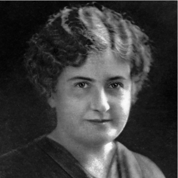

Centro de Educación
Maria Montessori de Madrid

|
¿Quienes somos? |

|
Inicio
¿Quienes somos?
Nuestra Enseñanza
Matrícula
Contacto
|
Nuestra Inspiración.
¿Quien es Maria Montessori? De un desafortunado romance con Giuseppe Montesano, psiquiatra y profesor suyo, nació su hijo Mario. La profunda desilusión que le causó el abandono del médico, llevó a María Montessori a afiliarse al movimiento feminista, del que fue representante a nivel nacional e internacional, y representó a Italia en los Congresos de Berlín (1896) y de Londres (1899). Se interesó por la educación de los niños con deficiencias mentales y aplicó métodos experimentales consiguiendo que estos niños aprendieran a leer y escribir. Desarrolló sus propios métodos que aplicó más tarde a toda clase de niños. |
 |
| INICIO | E-MAIL: ies_montessori_madrid@gmail.com | TLF: 657734328 / 957463521 |
|